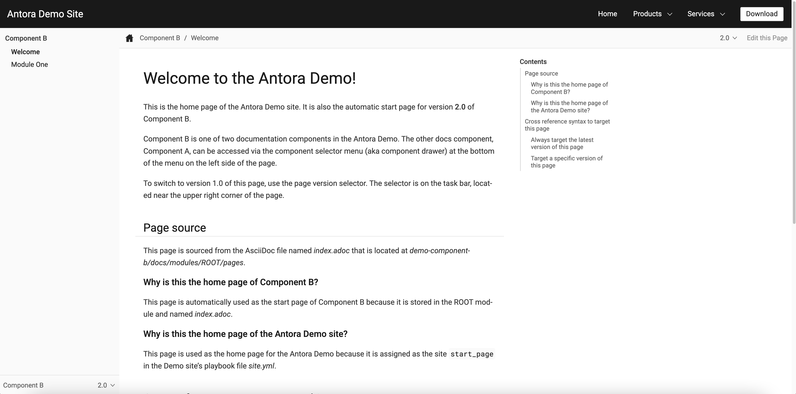

정리용도 간단한 블로그 생성 가이드 (with asciidoc)
개요
ASCIIDOC 을 익히고 앞으로 해당 문법을 사용해서 컨텐츠를 정리하기 위해 블로그를 간단하게 만들었다.
Asciidoc 지원 프레임워크
-
https://gist.github.com/briandominick/e5754cc8438dd9503d936ef65fffbb2d 이중에서 흥미가 생겼던 Antora 를 통해서 간단히 구축했다. 생성방법은 어렵지 않았다
Antora-Starter(참고)
가이드 대로 따라한다면 다음과 같은 사이트를 만들어 낼 것이다.

로컬에서 npx antora antora-playbook.yml 를 통해 빌드가 되므로 이를 액션으로 감지하여 빌드하도록 했다.
블로그 빌드
site:
title: jeon3029 wiki
start_page: TJ-TIL::first.adoc
content:
sources:
- url: https://github.com/jeon3029/bloc-contents
# 원격 레포로부터 컨텐츠를 끌어와 빌드한다
branches: HEAD
ui:
bundle:
url: ./ui-bundle
snapshot: truepublish.yml
name: Publish to GitHub Pages
on:
push:
branches: [main]
jobs:
build:
runs-on: ubuntu-latest
steps:
- name: Checkout repository
uses: actions/checkout@v2
- name: Install Node.js
uses: actions/setup-node@v2
with:
node-version: '16'
- name: Install Antora
run: npm i antora
- name: Generate Site
run: npx antora antora-playbook.yml
# 블로그 빌드액션
- name: Publish to GitHub Pages
uses: peaceiris/actions-gh-pages@v3
with:
github_token: ${{ secrets.GITHUB_TOKEN }}
publish_dir: build/site
# buile/site 를 gh-pages 에 배포같은 레포에 branch 를 나누어 메인 브랜치에서는 컨텐츠를 관리하고 gh-pages 로 빌드하여 빌드 컨텐츠를 분리하였다.